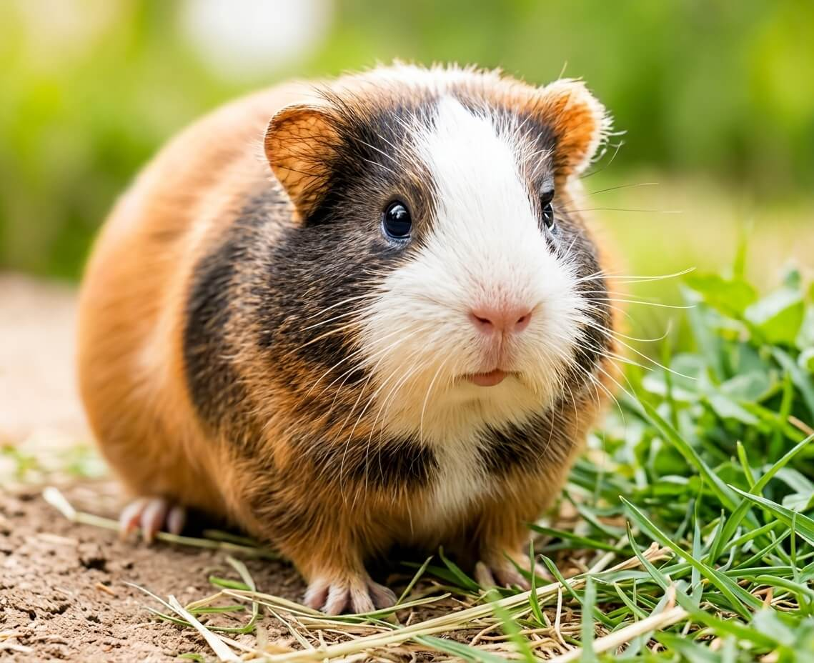

「プイプイ」とよくおしゃべりする鳴き声
うれしいときやごはんを待つとき、仲間とやりとりするときなど、さまざまな声で鳴きます。声のトーンの違いにも耳を澄ませてみてください。
本日は団体のお客様が多くご来園の予定です。事前購入のeチケットがおすすめです。

Guinea Pig / Cavia porcellus
「プイプイ」と可愛い声でおしゃべりします。ふれあい広場でやさしくなでてみよう。
| 展示エリア | ふれあい広場 |
|---|---|
| 生息地 | 南米アンデス山脈周辺 |
| 好きな食べ物 | 牧草・キャベツ・にんじん |
| ふれあいタイム | 13:00〜（整理券制・ふれあい後は手洗いを） |
うれしいときやごはんを待つとき、仲間とやりとりするときなど、さまざまな声で鳴きます。声のトーンの違いにも耳を澄ませてみてください。
群れでくらす草食の仲間で、基本的にはとてもおだやか。ひざの上やマットに座り、背中やほっぺたをゆっくりやさしくなでてあげましょう。
白・茶・黒などの模様の組み合わせや、つややかな短毛・ふわふわの毛並みなど、一頭ずつ見た目の個性が豊かです。
上から急に手をかぶせるとびっくりしてしまうので、視界に入る位置からゆっくり近づき、毛並みに沿ってそっとなでてあげてください。
満足してリラックスしているときの「グルグル」という低い声や、驚いたときの短い声など、いろいろな音を出します。
ふれあい広場を出たら、必ず石けんで手を洗いましょう。また、抱っこはスタッフの案内があるときや安全な姿勢で行ってください。
サバンナや森、水辺で暮らす仲間たちの紹介ページへ戻れます。